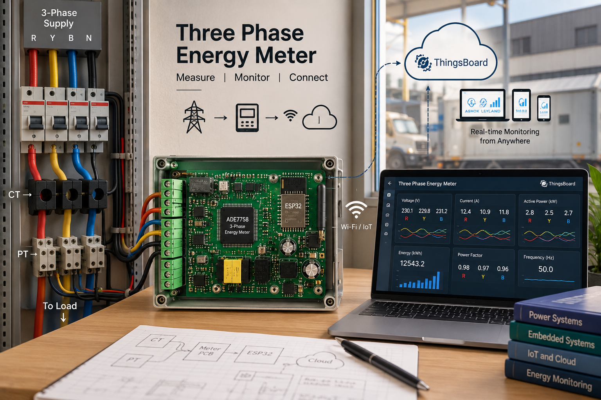

Past project · Smart metering · Patent filed
Three Phase Energy Meter
A low-cost meter that measures each phase of a three-phase supply and sends the readings to the cloud, so you can check them from anywhere.
- 3 phasesMeasured
- CT + PTLive calibration
- CloudDashboard

01. The problem
In factories and big buildings, power comes in three phases. The useful numbers, like current, voltage and power on each phase, are usually available only at the panel. Without remote monitoring, problems are noticed late and energy use is only guessed.
02. What we built
A meter built around the ADE7758 energy-metering chip. It measures current, voltage and power on every phase and sends the data to a ThingsBoard dashboard on the cloud.
03. Key points
What it does
- Real-time CT and PT calibration, so it can be tuned on site.
- Measures current, voltage and power.
- Streams data to the cloud for remote monitoring.
How it works
- MainsThree-phase supply
- CT / PTCurrent and voltage sensing
- ADE7758Metering chip
- ControllerReads and sends data
- CloudThingsBoard dashboard
Why live calibration matters
Every current and voltage transformer is a little different, and so is every installation. Because calibration can be done in real time, the meter can be set up correctly where it is fitted, instead of only at the lab bench.
Patent and paper
Patent filed: IoT Enabled Low Cost Three Phase Energy Meter Using ADE7758 (Patent ID 202341087967). This work was also presented at COMSYS 2024.